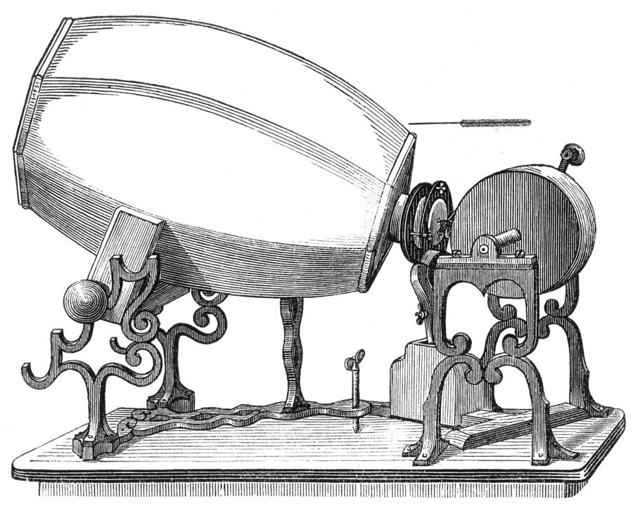
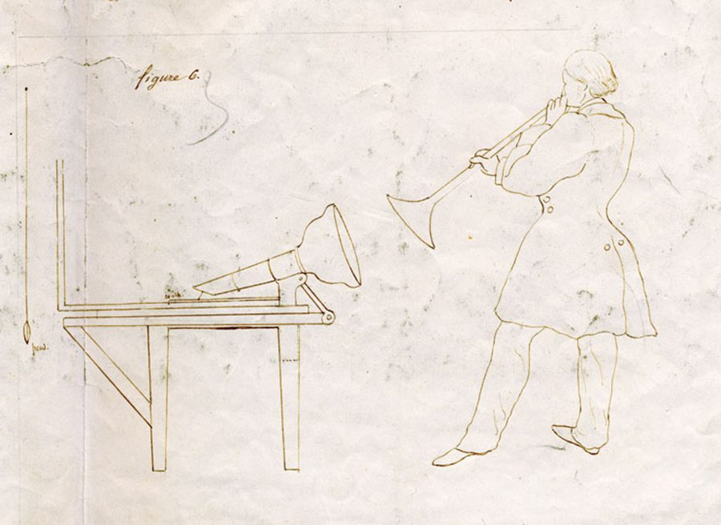
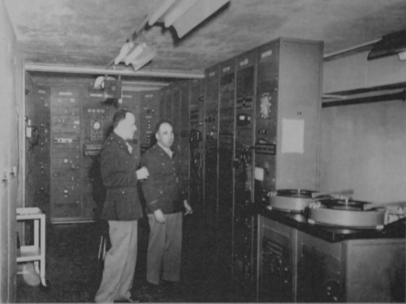
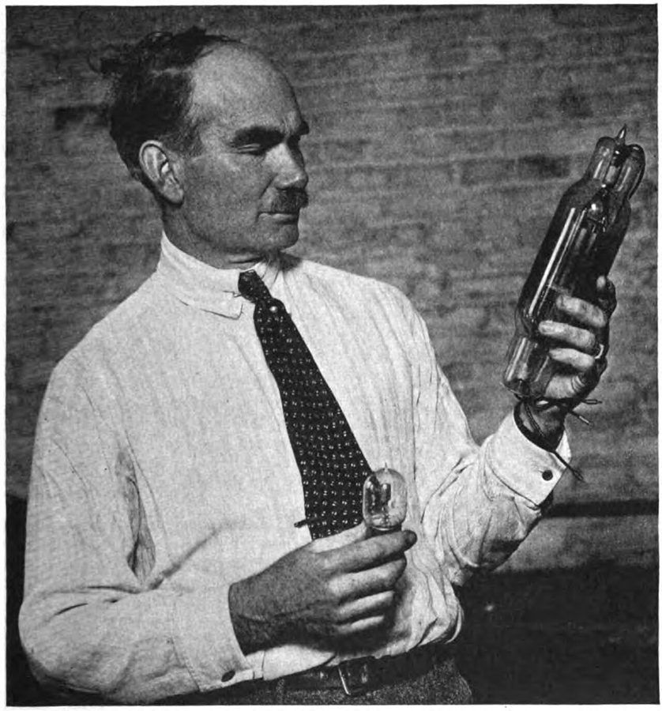
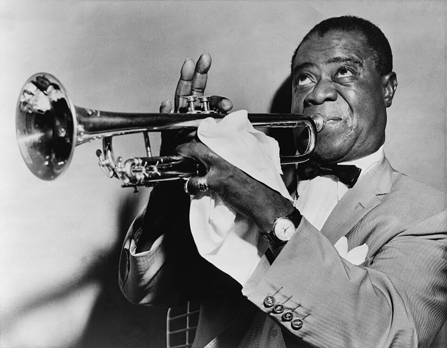

这一章在做什么
这一章从人的嗓音出发，分三路走。一路是把声音留住、送远：写下声波的机器、电话、贝尔实验室，最后是数字采样。一路是把声音放大：真空管带出广播、爵士乐、万人集会和失真的吉他。最后一路跳得最远：用回声「看」东西的声呐，走进了医院的产科。
读的时候抓两件事：发明人几乎总是猜错自己的东西会被拿去干什么；新技术出故障的方式，也会变成新东西。

声波记录仪（phonautograph），1859 年的型号。左边的大桶收声，细的一头蒙着一层膜，膜上的细针在右边转动的圆筒上划出波纹。它是 §2 的主角：能把声音写下来，却不能放出来。
Édouard-Léon Scott de Martinville，公有领域，维基共享资源 因果链：这一章的蜂鸟效应
这一章的链条有一条主线、两条支线，分三张图画。方框下面的小字是它在第几节。
主线：把人声留住、送远，最后变成数字（§1–§4）
洞穴里的回响 §1
声波说＋耳朵解剖 §2
声波记录仪 §2 · 只录不放
留声机 §3
1956 和解：专利开放 §3
贝尔实验室 §3
电话 §2 末、§3
摩天楼、女接线员 §3
战后美国电子业 §3
保密通话 §4
采样：声音变数字 §4
完美复制 §4
音乐、电视业洗牌 §4
§2 还顺口提了一句「声音在水里快四倍」，
要到 §8 才用上，见第三张图。
本站示意图。主线。电话这个节点分了三岔：往右是它对城市和职业的影响，往左是贝尔实验室。贝尔实验室又分两岔，一岔是制度（专利开放），一岔是技术（数字化）。
支线一：把声音放大（§5–§7）
无线电报 §5
充气三极管 Audion §5
真空管 §5
雷达、电视、计算机 §5
广播电台 §6
麦克风＋扩音器 §7
电吉他音箱 §7
同一只管子，三种用法：
送远、放大、玩坏。
爵士乐红遍全国 §6
集会、体育场演唱会 §7
失真、反馈啸叫 §7
民权运动 §6
摇滚的招牌音色 §7
本站示意图。支线一。真空管是全章的枢纽：§5 讲它怎么来，§6 和 §7 讲它往三个方向各走了多远。
支线二：用声音「看」（§8）
水里声音快四倍 §2 埋下，§8 用上
水下警钟＋水听器 §8
声呐 §8 · 发声听回声
探鱼、测绘海底 §8
催它出来的两件事：泰坦尼克撞冰山、德国潜艇
出生性别比失衡 §8
胎儿性别鉴定 §8
医用超声 §8
产前检查 §8
本站示意图。支线二。医用超声往右是救命，往左是作者说的「阴暗面」，两头出自同一台机器。 最出人意料的一跳在第三张图：一台为了听冰山回声而造的机器，隔了几代人，改变了一个国家新生儿的男女比例。作者自己说这是二十世纪技术里最惊人的蜂鸟效应之一。
第二远的一跳在第一张图：一场反垄断官司的和解条款，成了战后电子业的起点。这两跳都不是技术本身推出来的，中间隔着法律和习俗。
分节地图
原书这一章分 8 节，节与节之间是一条短横线，每节开头几个词是小型大写字母。读完一节回来打个勾。
Roughly one million years ago …约 700 词 开场：从洞穴回声引出全章主题「放大并留住人声」，留意它和视觉技术的对比。 FOR THOUSANDS OF YEARS after …约 1500 词 论点是比喻既成全人也困住人：看作者怎样解释「只录不放」不算疏忽。 FOR SOME REASON, sound technology …约 1200 词 前半讲发明人猜错用途；重点在后半：贝尔实验室为何高产，答案在反垄断。 ONE OF THE MOST TRANSFORMATIVE …约 900 词 声音第一次变成数字。抓住起因是保密而不是音质，以及「完美复制」的后果。 THE DIGITAL SAMPLES OF SIGSALY …约 900 词 真空管的来历：一个原理全想错的发明怎样被别人改对，为后两节铺路。 RADIO BEGAN ITS LIFE as …约 800 词 支线之一：广播和爵士乐。作者把它一路连到民权运动，留意他的措辞有多强。 LIKE MANY POLITICAL FIGURES of …约 1300 词 支线之二：扩音。先讲集会，再讲失真和反馈，结尾一段是全章的方法论。 FROM THE NEANDERTHALS chanting in …约 1800 词 最远的一跳：声音用来「看」。留意作者从救命转到性别选择时口气的变化。
背景：作者默认你知道的事
这一章人名最密的是 §6 和 §7 的音乐人，机构最要紧的是 AT&T 和贝尔实验室。按出现的顺序补上。
§1 阿尔西洞穴，和「尼安德特人」这个说法
阿尔西洞穴群「大洞」里的一段通道，旧明信片。
Croquant，公有领域，维基共享资源
阿尔西（Arcy-sur-Cure）在法国勃艮第，巴黎东南约 180 公里。书里把在洞里画画、唱歌的人叫尼安德特人。考古学界一般把这批约三万年前的壁画归给早期现代人（智人），尼安德特人是更早住过这些洞的人。读的时候把 Neanderthal 当成「远古先民」就行。§7 里的 since Neolithic times （自新石器时代以来）也是泛指远古；这批壁画按年代属旧石器时代，书里第 4 段自己写的也是 Paleolithic 。
§1 音墙，和凯克望远镜菲尔·斯佩克特（Phil Spector）是 1960 年代的美国唱片制作人。他让一大群乐手挤在一间录音室里同时演奏，再把声音送进专门的回声室，叠成厚厚一层，人称「音墙」（Wall of Sound）。Ronettes 和 Ike & Tina Turner 都是他制作过的艺人。
凯克望远镜（Keck）在夏威夷莫纳克亚山顶，一共两台，主镜口径各 10 米，作者拿它当「人眼被技术延伸到了哪里」的终点。
§2 速记，和三个发明人
斯科特 1857 年画的录音场面：对着喇叭口吹号，另一头的针把声波划在纸上。
Édouard-Léon Scott de Martinville，公有领域，维基共享资源 速记（shorthand，学名 stenography）是用一套简化符号跟上说话速度的手艺。录音机普及以前，法庭和议会靠速记员留记录。这一节的论点全靠它：斯科特是拿速记当模板来想录音的。
「林肯还活着的时候」是美国人的年代坐标：1860 年 4 月，林肯还没当选总统。
斯科特 Édouard-Léon Scott de Martinville 巴黎的印刷工，1857 年拿到声波记录仪的专利。
贝尔 Alexander Graham Bell 生于苏格兰，教聋人说话出身，1876 年取得电话专利。
爱迪生 Thomas Edison 1877 年做出留声机。最早是录在锡箔上，蜡筒是后来的改进。
§3 AT&T、贝尔实验室和 1956 年的和解AT&T（美国电话电报公司）由贝尔的电话公司发展而来，垄断美国电话业直到 1984 年被拆分。贝尔实验室（Bell Labs）是它的研究机构，1925 年正式成立；书里把更早的 AT&T 研究部门也叫 Bell Labs。
antitrust 是反垄断，trust 指「托拉斯」。natural monopoly （自然垄断）是经济学术语：电网、水管这类行业，一家做比多家做成本低。门洛帕克（Menlo Park）是爱迪生在新泽西的实验室。
§3 红色电话和古巴导弹危机1962 年 10 月，苏联在古巴部署核导弹，美苏对峙了十三天。当时两国首脑互相传话要走外交电报，一来一回好几个小时。第二年两国才设了直通热线。电影里它总是一部红色电话，实物是电传打字机（Teletype）：两头打字、靠电报线路传送的机器。
同一节提到的 Flatiron（熨斗大厦，1902）和 Singer Building 都是纽约早期的摩天楼。
§4 SIGSALY 和「青蜂侠」
一套 SIGSALY 终端，1943 年。一套有几十个机柜，重约 50 吨。右边的转盘放的是当密钥用的唱片，通话两头各放一张一模一样的。
作者不详，公有领域，维基共享资源 SIGSALY 是二战时盟军最高层用的加密电话，连着华盛顿的五角大楼和伦敦等地，丘吉尔就用过。《青蜂侠》（The Green Hornet）是 1930 年代起在美国播出的广播剧，主题曲用的是《野蜂飞舞》，机器的嗡嗡声让人想起它。
曼哈顿计划（Manhattan Project）是美国造原子弹的绝密工程。7 月 4 日和巴士底日是美、法两国的国庆日。Napster 是 1999 年上线的 MP3 共享软件，两年后被法院叫停。
§5 马可尼和德福雷斯特
德福雷斯特和他的两只电子管，1922 年刊出的照片。
作者不详，公有领域，维基共享资源
马可尼 Guglielmo Marconi 意大利人，把无线电报做成了生意，1909 年得诺贝尔物理学奖。
德福雷斯特 Lee De Forest 美国发明家，1906 年做出三极管 Audion，一生官司不断。这一章里他是「想对了用途、想错了原理」的人。
摩尔斯电码（Morse code）用长短两种信号拼字母，所以早期无线电只要能发出「有」和「没有」就够了。引文里的 ether （以太）是当时人们设想的、充满空间并传递电波的介质，后来物理学放弃了这个概念。
《托斯卡》（Tosca）是普契尼的歌剧，大都会歌剧院（Metropolitan Opera）在纽约。
§6 爵士乐的人和地方
艾灵顿公爵在纽约的 Aquarium 俱乐部弹琴，1946 至 1948 年间。
William P. Gottlieb / The Library of Congress，公有领域，维基共享资源

路易斯·阿姆斯特朗，1953 年。书里说他的小号比舒伯特更适合早期的收音机喇叭。
World-Telegram staff photographer，公有领域，维基共享资源
这一节的底色是种族隔离（segregation）：当时美国南方由法律规定黑人白人分开使用学校、车厢、餐馆，北方也有事实上的隔离。棉花俱乐部（Cotton Club）在纽约哈莱姆区，台上是黑人乐手，台下只接待白人。
后面那串地名各指一种音乐的老家：孟菲斯是猫王和早期摇滚，利物浦是披头士，South Central 是洛杉矶中南区。
艾灵顿公爵 Duke Ellington 钢琴手、作曲家、乐队领班。
路易斯·阿姆斯特朗 Louis Armstrong 小号手、歌手，绰号 Satchmo。书里两个名字都用。
埃拉·菲茨杰拉德 Ella Fitzgerald 歌手。
比莉·哈乐黛 Billie Holiday 歌手。1939 年录的《奇异的果实》唱的是吊在树上的私刑受害者。
§7 从纽伦堡到「我有一个梦想」
1963 年 8 月 28 日，马丁·路德·金在林肯纪念堂的台阶上向人群致意。这么多人能听清一个人讲话，靠的是麦克风和扩音器。
作者不详，公有领域，维基共享资源
1789 是法国大革命，1848 是欧洲多国同时爆发革命的一年，作者用这两个年份代表「人群涌上街头」的旧式政治。纽伦堡集会见引言那一页。「我有一个梦想」是马丁·路德·金 1963 年 8 月 28 日在华盛顿林肯纪念堂前的演讲，现场约 25 万人。
三场演出：披头士在纽约谢亚球场（1965）、伍德斯托克音乐节（1969）、拯救生命（Live Aid，1985）。
§7 噪音这条线上的人
马蒂·罗宾斯 Marty Robbins 乡村歌手。Grady Martin 是给他伴奏的录音室乐手。
基思·理查兹 Keith Richards 滚石乐队吉他手。《Satisfaction》1965 年发行。
吉米·亨德里克斯 Jimi Hendrix 1960 年代后期的吉他手，把反馈啸叫当乐器用。
齐柏林飞艇、音速青年 Led Zeppelin, Sonic Youth 前者是 1970 年代的英国硬摇滚乐队，后者是 1980 年代的纽约噪音摇滚乐队。
「无线电街」（Radio Row）是曼哈顿下城科特兰街一带的电器铺子街，1960 年代拆掉，原地建了世贸中心。the elevated train 是当时纽约架在街道上空的高架铁路，过车时很吵。
§8 泰坦尼克、U 艇和费森登
费森登和他的振荡器，约 1914 年。圆鼓放进水里，既能发声也能收声。
Daderot，公有领域，维基共享资源
泰坦尼克号 1912 年 4 月首航时撞上冰山沉没，约 1500 人遇难。U 艇（U-boat）是德国潜艇，来自德语 Unterseeboot。费森登（Reginald Fessenden）生在加拿大，当时加拿大是英帝国的自治领，1914 年随英国参战，美国到 1917 年才参战，所以他急、他的美国老板不急。Union Jack 是英国国旗。
书里说沉船在海面下 12000 英尺，约合 3700 米；通行的数字是约 12500 英尺、3800 米。亚历山大灯塔建于公元前三世纪的埃及。
这一章的科学，先用中文过一遍
采样：声音怎样变成一串数
模拟：一条连续的曲线
唱片的纹路、电话线里的电流都是这种
数字：隔一小段时间量一次
4 6 6 4 2 2 4 6 6 4 2 2 4
每次量到的高度记成一个数，再写成 0 和 1
模拟
原来的波形
波形＋一点噪声
波形＋更多噪声
抄 再抄
数字
4 6 6 4 2 2 …
4 6 6 4 2 2 …
4 6 6 4 2 2 …
本站示意图。上：采样就是隔一小段时间量一次波形的高度。下：模拟信号每抄一次、每传一段都混进一点噪声；数字信号抄的是数，抄一万遍还是那串数。 声音是空气压力的连续起伏。电话把这个起伏变成同样形状的电流，这叫模拟（analog）：信号的形状「类似」原来的声波。
采样（sampling）换了个办法：每隔固定的一小段时间量一次波形有多高，记成一个数。量得够密，就能把原来的波形还原回来；CD 是每秒量 44100 次。
一串数有两个好处。一是好加密：对数做运算，比搅乱一条曲线容易得多。二是好复制：就像复制文件，副本和原件逐位相同，不像翻录磁带那样一代比一代糊。§4 的两个后果，保密通话和「完美复制」，都从这里来。
三极真空管：小信号控制大电流
阳极：收电子
栅极
阴极：放电子
输入：很弱的信号
接到栅极
输出：形状一样，大得多
栅极上电压的一点点变化，决定有多少电子过得去。
本站示意图。三极管有三个电极。栅极像水龙头的把手：拧把手用的力很小，管住的水流很大。 真空管（vacuum tube）是一只抽掉空气的玻璃泡。阴极（cathode）加热后放出电子，阳极（anode）加了正电压，把电子吸过去，于是管子里有电流。
三极管在两者之间多放一道金属网，叫栅极（grid）。栅极上的电压稍微变一点，穿过去的电子就多很多或少很多。把微弱的信号接到栅极，阳极那边就得到一个形状相同、强得多的信号，这就是放大。
放大解决了 §4 提过的问题：信号在长途线路上越走越弱，隔一段放大一次就能接着走。同一个原理接上麦克风和喇叭，就是 §7 的扩音器。晶体管后来做的是同一件事，只是换成了固体材料。
管子里必须是真空：有气体，电子会撞上气体分子，工作就不稳。这正是 §5 里那个发明被别人改对的地方。
过载和反馈：放大器的两种「坏法」
过载：波峰被削平
虚线：放大器能给出的上下限
细线：本该放大成这样 粗线：实际出来的
反馈：声音绕成一个圈
拾音器、麦克风
放大器
音箱
音箱的声音又被收进去
每绕一圈大一点，直到啸叫
本站示意图。左：过载失真。右：反馈。两样本来都是工程师要消灭的毛病。 放大器能输出的电压有上限。输入太强，本该更高的波峰顶到上限就被削平，圆润的波形变得方头方脑，听起来多了一层沙沙的毛刺。这叫过载（overdrive），结果叫失真（distortion）。
反馈（feedback）是另一回事：音箱放出的声音被麦克风或吉他的拾音器收回去，又被放大，再放出来，绕成一个闭环。写过没有退出条件的循环就懂：每转一圈音量乘一个大于 1 的数，很快顶到上限，变成一声尖啸。会议室里话筒对着音箱时的那一声就是它。
回声测距：声呐和超声
海面
船
冰山、潜艇或海底
发出一声
回声
距离 ＝ 声速 × 来回时间 ÷ 2
水里声速约每秒 1500 米。发声后 2 秒听到回声，目标就在约 1500 米外。
本站示意图。主动声呐：自己发一声，掐表等回声。蝙蝠和海豚用的是同一招，叫回声定位。
产科超声仪的屏幕，孕 20 周左右的胎儿侧面。扇形的顶点是探头的位置，越亮的地方回声越强。
Goleisureintl，CC BY 4.0，维基共享资源
声音在空气里每秒走约 340 米，在水里每秒约 1500 米，是四倍多。水下的声音传得远，也不受海面风浪的吵闹干扰，所以水里适合用声音探路。
早期的办法是被动的：岸边放一口钟，船上只管听。声呐（sonar）改成主动：自己发一声，等回声。知道声速，量出来回用了多久，就算得出目标有多远。
医用超声（ultrasound）是同一个原理，缩小到人体尺度。它用的声波频率高达每秒几百万次，远高于人耳听得到的上限（约两万次）。频率越高波长越短，分得清的细节越小。声波在不同组织的交界处反射回来，机器按回声到达的先后画出一幅图。
英文 中文 一句话 reverberation 混响 声音在封闭空间里多次反射、叠在一起慢慢消失。echo 是分得清的一声一声的回音。 eardrum 鼓膜 耳道尽头的一层薄膜，声波让它振动。auditory canal 是耳道。 phonautograph 声波记录仪 斯科特的机器，只能把声波画下来。phonograph 是爱迪生的留声机，能放。 waveform 波形 把声音的起伏画成的那条曲线。 phoneme 音素 语言里能区分意思的最小声音单位。 analog / digital 模拟 / 数字 用连续的量表示信号，或用一串离散的数表示。 amplitude / frequency 振幅 / 频率 波有多高（响度），每秒振动多少次（音调）。频率的单位是赫兹 Hz。 spark-gap transmitter 火花隙发射机 靠电火花发出一阵电磁波的早期发报机，只适合发电码。 electrode 电极 电流进出器件的导体。三极管有三个。 AM radio 调幅广播 让电波的强弱跟着声音变。早期广播都是这种，音质窄而扁。 dynamic range 动态范围 最轻的声音和最响的声音之间的差距。交响乐的很大。 decibel 分贝 响度的单位，是对数刻度：每加 10 分贝，声音的功率乘 10。 pickup 拾音器 电吉他上把琴弦振动变成电信号的部件。 hydrophone 水听器 在水下用的麦克风。 oscillator 振荡器 按固定频率来回振动的装置。书里那台工作在 540 Hz 上下。
词与短语
词条按在书里出现的顺序排，按节分组。斜体小字是它所在的那句话里的几个词，方便你在书里找到。
§1 Roughly one million years ago …
festooned with
… eventually be festooned with stalactites and …
挂满了
festoon 本义是节日挂的花彩。stalactite 是钟乳石（往下长），stalagmite 是石笋（往上长）。
hauntingly
… even, most hauntingly, the imprint of …
最叫人久久难忘的是
haunt 本义是鬼魂出没，形容画面、旋律时是「挥之不去」，多半是褒义。
drive
… of the primordial drive to represent …
冲动，内在的驱动力
名词。全章的主语就是这个词：第 6 段的 The drive to enhance ，第 39 段的 our drive to reproduce 。primordial 是原始的。
the way a bat would
… the caves the way a bat would …
像蝙蝠那样
the way 在这里当连词用，等于 as。would 后面省了 study them。这种写法全书常见。
die down
… almost five seconds to die down …
渐渐平息
声音、风、火、争议都可以 die down。不是「死掉」。
not unlike
… the effect is not unlike the …
颇像
双重否定，书面语里表示「有几分像」，比直接说 like 留了余地。
come courtesy of
… the effect comes courtesy of the …
由……提供，拜……所赐
courtesy 本义是礼貌。courtesy of X 原是图片署名用语（承蒙 X 提供）。第 40 段又用了一次。
that most intoxicating of sounds
… that most intoxicating of sounds: the …
所有声音里最醉人的那一种
that most + 形容词 + of + 复数名词 是文气很重的最高级写法。intoxicate 本义是使人喝醉。
in time
… voice would in time pave the …
假以时日，终究
不是「及时」。这里是插在 would 和 pave 中间的状语。
pave the way for
… pave the way for a series …
为……铺路
pave 是铺路面。作者讲因果时常用的短语之一。
vocal chords
… But our vocal chords, vibrating in …
声带
标准拼法是 vocal cords（cord 是绳索）。chord 是和弦，两个词同音，书里一直写成 chords。
slip the surly bonds of Earth
… they slipped the surly bonds of Earth …
挣脱了地球的束缚（飞上了太空）
出自飞行员诗人 Magee 1941 年的诗《High Flight》。1986 年挑战者号失事后里根在悼词里引过，美国人一听就知道。surly 是阴沉粗暴的，bonds 是镣铐。
in full force
… not arrive in full force until …
大规模地，全面地
原指军队全员出动。
just about
… they changed just about everything. …
几乎，差不多
口语里的 almost。第 28 段的 just about everything 、第 46 段的 just about any technology 都是它。
§2 FOR THOUSANDS OF YEARS after …
fanciful
… was as fanciful as counting fairies …
异想天开的
「像数仙女一样不着边际」。fancy 作名词有「幻想」的意思。
after all
… medieval cathedral design, after all, was …
要知道，毕竟
不是「最后」。插入语，用来给前一句话补一个理由。
as much about A as about B
… was as much about sound engineering …
讲究 A 的程度不亚于讲究 B
重点落在 A 上：读者本来只想到 B（视觉），作者提醒还有 A（声学）。
the adjacent possible
… entered the adjacent possible only after …
相邻可能：下一步够得着的那些可能性
possible 当名词用。这是生物学家 Stuart Kauffman 的术语，作者全书都在用：每个时代只能发明「隔壁房间」里的东西。本章第 39、62 段再现。
stumble across
… happened to stumble across one of …
偶然碰上
stumble 是绊了一下。同义的还有 come across 和 §8 的 run across 。
a student of
… been a student of shorthand writing …
钻研……的人
不是在校学生。说某人是 a student of history ，是说他对历史下过功夫。
in the annals of
… In the annals of invention, there …
在……的史册上
annals 是编年史，只用复数。书面套语，后面常跟一个最高级判断。
farsightedness and myopia
… curious mix of farsightedness and myopia …
远见和短视
两个都是眼科名词（远视、近视），这里都是比喻。引言里的 farsighted 是真的远视，别混。curious 这里是「奇特的」。
get around to
… inventors and scientists got around to …
终于腾出手来做
暗含「拖了很久」的意思。后面省略了 it，指上文那个想法。
hamstrung
… invention was hamstrung by one crucial …
被拖住了手脚
hamstring 是腿后面的大筋，割断了就走不了路。过去分词是 hamstrung。
the other side of the divide
… from the other side of the divide …
分界线的这一头（事后）
divide 作名词是分水岭、鸿沟。意思是：我们站在「回放已经发明」之后看他，才觉得他漏了。
make it all the way to
… couldn’t make it all the way …
一路走到
make it 是「到达、做成」。这段把想法比作要走的路：grasp the first，make it to the second。
governing metaphor
… of relying on governing metaphors, of …
统领思路的比喻
govern 这里是「支配、主导」。下一句的 structuring metaphor 是同一个意思。句中两个 of 短语是同位语，后一个解释前一个。
not exactly
… we’re not exactly slackers, either …
可也算不上
反话式的轻描淡写：说「算不上懒汉」，意思是「其实挺能干」。slacker 是混日子的人。
warble
… de Martinville warbling from the grave …
颤着嗓子唱
本指鸟鸣。from the grave （从坟墓里）是说死者的声音重新响起。第 64 段又用了一次 warbling。
apparent
… even this apparent failing underscores the …
表面上的，看似的
放在名词前常是「看上去是，其实未必」。underscore 是凸显、强调，不是下划线。
static
… The sound of static is a …
（收音机、唱片里的）沙沙杂音
名词。不是程序员熟悉的「静态」。来自 static electricity（静电）干扰。
hit upon
… he hit upon a method for …
偶然想到，摸索出
前半句的 tinkering 是「东改改西试试」，第 40 段的 tinkerer 是爱这么鼓捣的人。
§3 FOR SOME REASON, sound technology …
come along
… Some new tool comes along to …
出现，问世
不是「一起来」。这句用一般现在时讲一个反复发生的套路。
missive
… would record their missives on the …
信函
故意用的文绉绉的词，带点打趣。
pop into
… then pop them into the mail …
随手放进
pop 作动词表示又快又随意的动作。pop in 是顺道进去一下。
have it reversed
… legendary inventors had it exactly reversed …
把事情弄反了
have it + 形容词 ：把情况理解成某样。You have it wrong 是「你搞错了」。前一句的 mirror-image 是「镜像般正好相反的」。
incarnation
… at all in its original incarnation …
（最初的）形态，版本
宗教里是「道成肉身、化身」。说产品、机构的某一版时很常用。
fiasco
… after the communications fiasco that almost …
一塌糊涂的失败
inroad
… one of the first inroads for …
打进去的口子，立足点
本义是突袭。常说 make inroads into ：在某个领域取得进展。professional 加了引号，因为接线员算不算「专业阶层」要打折扣。
not for nothing
… Not for nothing was it known …
不是没有道理的
否定词放句首，后面主谓倒装：was it known。正常语序是 It was not for nothing known as …
definitive
… The definitive history of Bell Labs …
最权威的，公认的定本
别和 definite（明确的）混。
have as much to do with A as B
… had as much to do with antitrust …
和 A 的关系，不比和 B 的关系小
这一节的论点句。重点又落在 A（反垄断法）上：天才是大家想得到的，法律是想不到的。
keep at bay
… keep the regulators at bay by …
挡在外面，不让靠近
来自打猎：bay 是猎犬的吠叫，猎物被逼到绝路回过头来，猎犬只围着吠、不敢上前。
hodgepodge
… run by a hodgepodge of competing …
大杂烩
settle
… an intriguing compromise, settled officially in …
（官司）达成和解，了结
法律上 settle 是双方不等判决、自行了结。引言里的 settlement 是定居，是另一个意思。
modest
… be licensed for a modest fee. …
不高的，适度的
不是「谦虚」。说钱和数量时是「不多」。
give away
… have to give away its ideas …
白送
名词 giveaway 是赠品。
trust fund
… company a trust fund for research …
信托基金（这里指花不完的钱）
在美国，trust fund 让人想到富家子弟不用干活就有的那笔钱。这里的 trust 和 antitrust 里的不是一个意思。
for all practical purposes
… were, for all practical purposes, socialized. …
实际上，等于是
插入语。socialized 是「归社会公有」，不是「社交化」。作者故意用了一个资本主义语境里刺眼的词。
tithe
… had to pay a tithe to …
什一税
教徒把收入的十分之一交给教会。比喻人人躲不掉、但也心甘情愿的一笔钱。
§4 ONE OF THE MOST TRANSFORMATIVE …
leading up to
… the years leading up to the …
在……之前的那段时间
the days leading up to the election ：大选前的那些天。
closely guarded
… almost as closely guarded as the …
严加保密的
a closely guarded secret 是固定搭配。
usher
… had ushered us across a crucial …
引领
usher 本是剧院领座员。usher in a new era 是开启新时代。threshold 是门槛。
decay
… they were vulnerable to decay, signal …
（信号的）衰减
不是腐烂。第 21 段的 decay of degraded audio signals 也是这个意思。
wind its way
… as it wound its way through …
蜿蜒穿行
wound 读 /waʊnd/，是 wind（缠绕、蜿蜒）的过去式，不是「伤口」。又是 动词 + one’s way 结构。
common parlance
… would become common parlance among hip-hop …
通行的说法
parlance 是某个圈子的用语。嘻哈音乐里的 sampling 是从老唱片里截一段拿来用，词是同一个。
only
… times a second, only those snapshots …
只不过
这里是连词，等于 but / except that。第 16 段的 only you had to learn 是同一用法。
a blast of
… just hear a blast of digital …
一阵（刺耳的声音）
blast 是一股强气流、一声巨响。第 49 段小号的 blast、第 58 段蒸汽机的 blast 都是它。
at the outset
… At the outset of the call …
一开始
pressing
… to the more pressing issues of …
紧迫的
形容词。和「按压」无关。
if anything
… If anything, Buckley underestimated the significance …
要说有什么不对，那也是……
用来把上一句往更强的方向修正：他非但没夸大，反而说轻了。
unleash
… truly disruptive force that it unleashed …
释放出
leash 是牵狗的绳子，unleash 是松开绳子。第 48 段又用了一次。
fidelity
… and copied with perfect fidelity. …
保真度
本义是忠诚。hi-fi 就是 high fidelity。
the computational equivalent of
… the computational equivalent of the Fourth …
计算机世界里相当于……的那个东西
the X equivalent of Y ：在 X 领域里地位相当于 Y 的东西。第 57 段的 the musical equivalent of political rallies 同理。
§5 THE DIGITAL SAMPLES OF SIGSALY …
saturated with
… become a medium saturated with the …
充斥着
saturate 是浸透、饱和。第 60 段说吉他声被失真 saturating，是同一个词。
tinkerer
… before the tinkerers and research labs …
爱自己动手鼓捣的人
tinker 原指走街串巷的补锅匠。这个词在本书里是褒义。
part of the mix
… and song part of the mix. …
其中的一份子
mix 是混在一起的一锅东西。add X to the mix 是把 X 也加进来。
work out of
… Working out of his home lab …
以……为工作地点
不是 work out（解决、锻炼）加 of。He works out of a garage ：他的办公室就是车库。
plant a seed
… flickering gaslight planted a seed in …
埋下一个念头
grandiosity
… would later write, with typical grandiosity …
浮夸，好大喜功
作者写这个人物时一路带着这种评语：第 43 段的 poetic，第 49 段的 baroque。
settle on
… De Forest settled on a gas-filled …
最后选定
试了很多之后定下来。和 §3 的 settle（和解）不同。
hook up
… De Forest hooked up a telephone …
把……接上
设备之间接线用这个词。句型是 hook up A to B 。
arguably
… Arguably the most poetic of modern …
可以说是，称得上
不是「有争议地」。意思是「这么说站得住脚」，是作者下判断时留的一点余地。
not as much A as B
… as much wonder as it did derision …
引来的 A 不如 B 多
A 是 wonder（惊叹），B 是 derision（嘲笑）。句首的 Alas 是「可惜」。
dotted around
… radio receivers dotted around the city. …
零星分布在各处
dot 作动词：像点一样散布。
strains
… than the strains of a well-loved …
（乐曲的）旋律，乐声
复数。不是压力，也不是引言里的「品系」。这半句是在回敬上一段德福雷斯特自己的话。
flat-out
… had been flat-out wrong about most …
彻头彻尾地
口语里的加强词。flat-out lie 是赤裸裸的谎话。
lurk
… lurking behind all of De Forest’s …
潜伏，藏在后面
程序员说的 lurker（潜水的人）是同一个词。
frustrate
… vision would be frustrated by actual …
使落空，挫败
宾语是计划、愿望时是「使不能实现」，不是「使沮丧」。
§6 RADIO BEGAN ITS LIFE as …
ham radio
… continues to this day as ham radio …
业余无线电
和火腿无关。ham 是对业余报务员的旧称，中文圈的「火腿族」是照字面直译来的。
come to dominate
… that would come to dominate the …
后来逐渐主导
come to do 表示经过一段过程变成某样。would 是从过去看将来。
household name
… Louis Armstrong became household names. …
家喻户晓的名字
household 是「一家一户」。
baroque
… a characteristically baroque denunciation to the …
繁复夸张的
本指巴洛克风格，引申为辞藻堆砌。denunciation 是公开谴责。characteristically 是「一如其人」。
punch through
… Jazz punched through the compressed, tinny …
穿透而出
punch 是出拳。tinny 来自 tin（铁皮）：声音又薄又尖，像敲铁皮罐。
lost in translation
… was largely lost in translation. …
在转换中丢掉了
习语，原指翻译时走了味。这里没有翻译，指交响乐经过小喇叭就没了层次。
play well
… trumpet played better on the radio …
效果好，吃得开
不及物：某样东西在某个场合「反响如何」。That joke won’t play well here 。这里和「演奏」双关。
electrify
… the grown-ups and electrifying the kids. …
让……兴奋得像过了电
和第 33 段的 electrified（电气化）是同一个词的两个意思，作者是有意的。
carve out
… channel first carved out by jazz …
开辟出
channel 在这里是水冲出的河道（接上一句的 waves 比喻），同时又让人想到广播频道。
albeit
… into its living room, albeit through …
尽管只是
书面语的 although，后面直接跟短语。读作 /ɔːlˈbiːɪt/。这是作者在留余地：请进了客厅，但只是声音。
advocate
… as entertainers rather than advocates. …
为某项事业发声的人
这里专指为黑人权利奔走呼吁的人。下一句马上补了一个转折：其中很多人也成了 advocates。
color-blind
… The radio signals were color-blind. …
不分肤色的
字面是色盲。美国谈种族问题时的常用词：对肤色视而不见。
not do A as much as do B
… didn’t break down barriers as much …
与其说 A，不如说 B
容易读反。作者没说广播打破了隔阂，说的是它活在一个隔阂够不着的世界里。
common ground
… the first cultural common ground between …
共同点，共有的地盘
常说 find common ground ：找到共识。
a blow to
… itself was a great blow to …
对……的打击
blow 作名词是一击。句首的 That in itself 是「光这一点本身」。
§7 LIKE MANY POLITICAL FIGURES of …
be indebted to
… King was indebted to the vacuum …
受惠于
不是欠钱。for another reason 的 another 接上一节：爵士乐是一个原因，扩音是另一个。
enlist
… the technology was enlisted to amplify …
被拉来派上用场
本义是征兵、入伍。
swarm
… the swarm of humanity taking the …
蜂拥的人群
swarm 本指蜂群。take the streets 是占领街头。后面的 teeming 也是「挤满了、涌动的」。
coax out of
… designed to coax maximum projection out …
想方设法从……里挤出
coax 本义是哄。projection 这里是声乐术语：把声音送远的能力。不是投影。
earshot
… extended the range of earshot by …
听力所及的范围
shot 在这里是「射程、够得着的距离」。within earshot 是听得见的距离内。orders of magnitude 是数量级。
state-of-the-art
… loaded with state-of-the-art sound equipment …
当时最先进的
和艺术无关。art 是古义「技艺」，第 38 段的 the art of telephony 同理。
riveting
… riveting and drilling in construction …
打铆钉
这里是字面义。平时更常见的是形容词「让人目不转睛的」，别套错。
drown out
… it even drowned out the elevated …
（声音）盖过
drown 是淹死。第 65 段钟声被海浪 drowned out 是同一用法。
crunchy
… a crunchy layer of noise on …
沙沙脆脆的
本是嚼薯片那种脆。吉他手真的用 crunch 称呼轻度失真的音色。
take off
… wouldn’t really take off until the …
流行起来，起飞
同一段后面引文里的 a jet engine taking off 是真的起飞。
unplaceable
… strange, unplaceable noise of Martin’s riff …
说不出是什么的
place 作动词是「认出、归类」。I can’t place him ：我想不起他是谁。riff 是反复出现的一小段乐句。
hack together
… a friend to hack together a …
凑合着拼出一个
程序员的 hack 就是这个意思：不讲究，能用就行。
novel
… pattern developed with a novel—and initially …
新奇的，前所未有的
形容词，不是小说。两个破折号之间是作者顺手补的一句。
go to great lengths
… would go to great lengths to …
费尽力气，不厌其烦
pick up
… they didn’t pick up signal from …
接收到（信号）
吉他上的 pickup（拾音器）由此得名。
one man’s malfunction
… one man’s malfunction turned out to …
一个人眼里的故障（是另一个人的音乐）
套用谚语 One man’s meat is another man’s poison （甲之蜜糖，乙之砒霜）。英语里这个句式可以随便换词。
every now and then
… and every now and then, those …
偶尔，时不时
recoil in horror
… made Lee De Forest recoil in horror. …
吓得直往后缩
recoil 也指枪的后坐。would no doubt have made 是对过去的推测：他要是听到，肯定会。
§8 FROM THE NEANDERTHALS chanting in …
harness
… sound could be harnessed for something …
驾驭，拿来利用
本义是给马套上挽具。常用于能源：harness solar power 。
treacherous
… world at particularly treacherous harbors or …
暗藏危险的
说人是「背信弃义的」，说路、水域、天气是「看着没事、其实凶险」。后面的 shoals 是浅滩。
founder
… when the Titanic foundered in the …
（船）进水沉没
动词，和「创始人」是两个词。也用来说计划、公司垮掉。
run across
… Fessenden had run across an engineer …
偶然遇到
不是跑着穿过。后面的 come by the office 是「顺道来办公室坐坐」。
news breaks
… When news of the Titanic broke, …
消息传开
break 用于新闻是「爆出」。breaking news 就是突发新闻。
somewhat disturbingly
… After calling it, somewhat disturbingly, his …
说来有点让人不自在
这是个玩笑。vibrator 今天多指成人用品，所以作者说这个名字「令人不安」。
dub
… he ultimately dubbed it the …
给……起名叫
本义是国王用剑拍肩封爵。和电影「配音」的 dub 是同形的另一个词。
underscore
… world-historical events underscored the need for …
凸显，说明了
不是下划线字符。句首的 Once again 指上一回是泰坦尼克。本章 once again 出现了五次，每次都在提示「同一个套路又来了」。
borderline
… been a borderline racist, later advancing …
差一步就算是
在界线边上的。advance a theory 是提出一种理论，不是「推进」。
on his own dollar
… ultimately traveled on his own dollar …
自掏腰包
更常见的说法是 on one’s own dime 。
upward of
… upward of ten thousand lives had …
超过，不止
armistice 是停战协定，这里指 1918 年 11 月一战停火。
ward off
… defensive measures to ward off these …
抵挡，防住
ward 作名词是病房、选区，这个短语里是古义「守卫」。
catch
… oscillator to detect their catch. …
渔获（要捕的鱼）
名词。
complications
… saved from complications that had been …
并发症
医学用语，常用复数。prenatal 是产前的，womb 是子宫。
back-door
… the “back-door” use of the technology …
走后门的，私下的
和软件后门是同一个比喻。
much less
… of abortion itself, much less gender-based …
更不用说
接在否定或搁置的内容后面。setting aside A, much less B ：A 先不谈，B 更不谈。作者在声明他不讨论堕胎本身的对错。
up to us
… of that technology is up to us. …
由我们决定
这句的前半是 The march of technology ：march 是行军，技术像队伍一样自己往前走。
resonance
… turns out to have unsuspected resonance. …
共鸣；回响
全章最后一个词，一语双关：物理上的共振，和「意想不到的深远影响」。unsuspected 是没人料到的。
值得停下来的句子
It wasn’t so much that he forgot or failed to make playback work; it was that the idea never even occurred to him.— 第 14 段，§2 的结论。本站译：与其说他是忘了回放、或者没把回放做成，不如说这个念头压根没在他脑子里出现过。
骨架是 It wasn’t so much that A; it was that B ：先否定一个现成的解释，再给出作者的解释。occur to somebody 的主语是念头，不是人。
这句值得停，是因为它定了全章看待发明人的口气：他们不笨也不粗心，只是站在「分界线」的那一头。后面讲爱迪生、贝尔、德福雷斯特猜错用途，都该照这个口气读。
Sometimes the way a new technology breaks is almost as interesting as the way it works.— 第 62 段，§7 的最后一句。本站译：有时候，一项新技术出毛病的方式，几乎和它正常工作的方式一样有意思。
主语是 the way a new technology breaks ，way 后面省了 that / in which。break 和 work 两个单音节动词对着放，句子很短，是作者少有的格言式写法。
它把 §7 的失真、反馈和 §2 的杂音、§5 的错误原理串到了一起：这一章里好几个新东西是从「坏掉」里来的。
The march of technology has its own internal logic, but the moral application of that technology is up to us.— 第 76 段，全章的立场句。本站译：技术往前走有它自己的内在逻辑，但怎样合乎道德地用它，取决于我们。
but 前后是两件事。前半句是全书一贯的主张：能发明什么由「相邻可能」决定，轮不到谁来挑。后半句是这一章才明说的补充：拿发明去干什么，是人的选择。
引言里作者说过全书对好坏「不表态」。这句是那个立场最清楚的一次展开，读懂它，就知道 §8 后半为什么口气忽然沉下来。
检查一下理解
先在心里答，再点开。答错的那题，回书里把对应那一节再读一遍。
1.（§2）作者认为斯科特是「忘了」做回放吗？他用什么来解释这件事？ 不是，作者自己把 forgot 这个词收了回去。他的解释是比喻的两面性：斯科特照着速记来想录音，速记写下来是给人读的，所以他以为波形也是给人读的。这个比喻帮他先人一步想到「写下声波」，也让他想不到「把它放出来」。
2.（§2）第 21 段说录音里的杂音反而 underscores 了它的历史意义。杂音有什么意义？ 作者的意思是，那种机械的沙沙声在自然界里不存在，是录音设备才有的声音，后来成了二十世纪人人听惯的声音。斯科特的录音是它第一次被记下来。这也是全章「故障变成新东西」的第一个伏笔。
3.（§3）贝尔实验室为什么出了那么多东西？作者认为和别的大实验室比，它特殊在哪？ 人才多、容忍失败、敢下大注，这些别的实验室也有。特殊的是 1956 年那份反垄断和解：垄断利润养着不计成本的研究，研究出来的专利却必须让给别的公司用。钱是垄断的，点子是公有的。
4.（§4）SIGSALY 把声音数字化，最初图的是什么？作者认为它真正深远的后果又是什么？ 图的是保密：数字信号听上去只是噪声，又容易加密。作者看重的却是另一个当时没人在意的性质：数字副本可以和原件完全一样。他把后来唱片业、电视业受到的冲击都追到这里。
5.（§5）德福雷斯特对自己的发明理解得对吗？这一节在因果链上的作用是什么？ 不对。他以为是气体在起放大作用，其实气体只碍事，煤气灯的火焰变化也是被声音震的。别的工程师把气体抽掉，才得到真空管。这一节交代了全章枢纽的来历，也给「发明人看不清自己的发明」添了最极端的一例。
6.（§6）作者是不是说，广播打破了美国的种族隔阂？ 没有说得这么满。他的原话是广播与其说打破了隔阂，不如说活在隔阂够不着的地方：电波不认肤色，白人家庭在客厅里听到了黑人音乐家。他也留了余地（albeit），进客厅的只是声音。他说的是这为民权运动提供了共同的文化基础。
7.（§7）失真和反馈，作者说这两种声音有什么不同？ 失真的声音和工业时代早就有的机器噪音有几分像，人耳已经被训练了一百多年。反馈是全新的：没有麦克风和音箱以前，世界上根本没有这种声音。所以他说亨德里克斯不只是在弹吉他，是在用吉他、拾音器、音箱三样东西一起造一种新声音。
8.（§8）结尾作者从超声的故事里得出两条 lesson。分别是什么？他是技术决定论者吗？ 一条是没有哪项技术的后果全是好的，同一台机器既救命也被用来选择性别。另一条比较乐观：人的巧思能跨过谁也想不到的边界。他只算半个决定论者：下一步能发明什么由已有的技术决定，但拿它做什么由人决定，后一个问题要靠另一套本事回答。